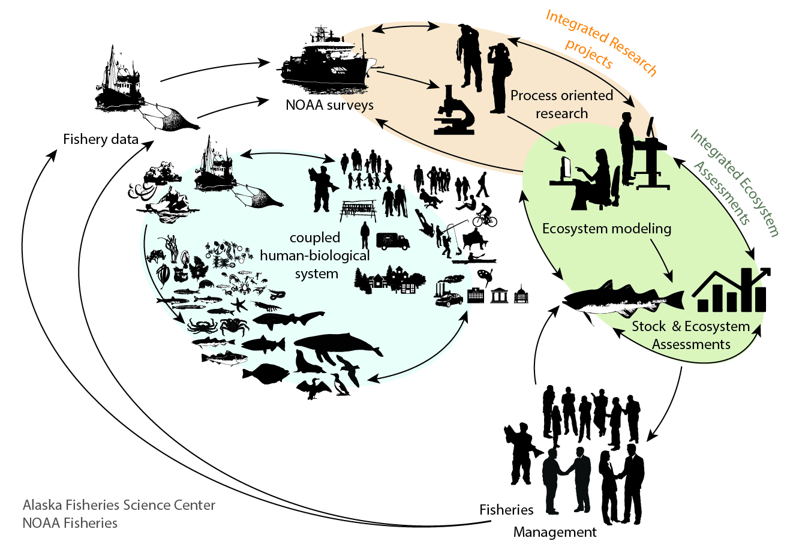

Integrated Modeling
Eastern Bering Sea
The Alaska Eastern Bering Sea Integrated Ecosystem Assessment program supports a suite of models that inform Ecosystem-based management, improve assessment methods and decision tools that produce results requested by the North Pacific Fisheries Management Council as part of analyses for the Council's Fisheries Ecosystem Plan.

Alaska Integrated Ecosystem Assessment (IEA) program supports a suite of climate-enhanced multispecies and ecosystem models of differing levels of complexity which allows IEA analysts to evaluate a broad range of questions from evaluating short-and long-term climate impacts on species, testing EBFM harvest strategies, and exploring historical patterns in food-web dynamics.
A multi-model approach is often needed to address such questions because no single model can provide a comprehensive prediction of future conditions that will inform all aspects of marine management. When models are considered jointly, projections from multiple models --some with high spatial resolution and multiple species interactions and others with well-defined error distributions-- can provide a more comprehensive prediction of future Bering Sea ecosystems and dependent human communities.
Suite of Models:
The Integrated Ecosystem Assessment suite of models range from a minimally realistic single-species climate enhanced multispecies stock assessment model ( CEATTLE ) with detailed treatment of process error, measurement error and model misspecification, to whole ecosystem models that track potential structural changes within the ecosystem that may emerge from complex ecosystem interactions.

Bering 10K Regional Ocean Modeling System (ROMS) Framework
Alaska’s Integrated Ecosystem Assessment program, in collaboration with the University of Washington Joint Institute for the Study of Atmosphere and Ocean, has operationalized a coupled modeling system for the Bering Sea, first developed as a collaboration between the National Science Foundation and the North Pacific Research Board, that use a Regional Ocean Modeling System (ROMS) as a framework to integrate climate to fish dynamics. This modeling system integrates Bering Sea field research, including physical data, lower trophic levels (nutrients, phytoplankton and zooplankton), fish life history, food habits, and fisheries catch information into a set modeling tools designed to support a wide range of Ecosystem Based Fisheries Management applications to substantially inform management decisions.
We use ROMS to downscale Global Climate Models (GCMs) of Earth’s major climate system components (atmosphere, land surface, ocean, and sea ice), and their interactions to the Bering Sea at a 10 km resolution. The Oceanographic module provides information on temperature, salinity, currents and sea-ice among other. The Nutrient Phytoplankton Zooplankton (NPZ) module couples ocean dynamics to those of the lower trophic level biology as represented by euphausiids (krill), copepods, small and large phytoplankton, ice algae, and nutrients. Importantly this module includes sea ice as well as detrital processes. Coupling fish dynamics to these modules, the FEAST (Forage-Euphausiid Abundance in Space and Time) incorporates temperature dependent fish growth and length-based feeding interactions (bioenergetics) into a simplified food-web of 25 components that include the main commercial fish, in addition to catch removals from 16 fisheries (by sector, gear and target species).
Management products:
Every year two products are produced for Alaska’s Bering Sea Ecosystem Status Report for the North Pacific Fisheries Management Council:
- A nine-month forecasts of the cold pool (bottom temperature below 2°C on the eastern Bering Sea shelf), a key feature within the ecosystem influencing life history and distribution of fish as well as primary and secondary production
- An updated hindcast that provides internally consistent time series of environmental variables such as zooplankton biomass and sea-ice cover.
Other products and partnerships using this model:
Current, updated model output and ongoing model performance improvement, has allowed multiple projects to leverage the availability of this tools and output and in turn, has strengthened and/or forged new partnerships:
- Evaluation of Indicator Performance Under Future Climate Conditions (funded by Fisheries And The Environment FATE program, NOAA) - Projected Essential Fish Habitat (funded by AFSC, NOAA)
- Fish Stock Climate Vulnerability Assessment (funded by AFSC)
- An integrative bioenergetics and spatial approach for quantifying relationships between northern fur seals, their prey, fisheries, and climate (funded by the Lenfest Ocean Program)
- Seasonal Forecasting Applications for Ecosystem-Based Fisheries Management in the Eastern Bering Sea (funded by the Modeling Analysis, Predictions and Projections, MAPP program, NOAA)
- Alaska Climate Integrated Modeling (ACLIM) Project
Model outputs are integrated into other models and tools such as the CEATTLE multispecies stock assessment model and the Rpath food web model.
Food web model
.png)
A food web model for the Bering Sea, using the Ecopath and Ecosim methodologies, has seen extensive use in developing management-based indicators of ecosystem structure and function; further, the development has included a set of tools (Rpath) in the R statistical language for conducting management strategy evaluations using food web models, and a set of visualization tools for food web exploration.
The CEATTLE multi-species stock assessment model:
The Multispecies stock assessment model for the Bering Sea (hereafter CEATTLE, for Climate-Enhanced, Age-based model with Temperature-specific Trophic Linkages and Energetics) that includes temperature-dependent von Bertalanffy weight-at-age functions and temperature-specific, bioenergetics-based predation interactions.
CEATTLE, is an example of an "environmentally-enhanced" stock assessment model, where temperature-specific algorithms predict size-at-age and predation mortality. The CEATTLE model utilizes abundance, catch and diet data (e.g., catch-at-age data, predator diet information) to estimate fishing mortality, recruitment, stock size, and predation mortality. Whereas many previous multispecies assessment models use static predator rations to predict species interactions, CEATTLE allows for temperature-dependent predator rations using individual consumption from bioenergetics models fit to diet data. The model also includes a temperature-dependent von Bertalanffy weight-at-age function to predict temperature-driven growth. This allows CEATTLE to capture climate-driven changes in predation and growth to estimate fishing impacts and (predation and fishing) mortalities under various climatic scenarios.
CEATTLE was first developed and applied to Eastern Bering Sea data for pollock, Pacific cod, and arrowtooth flounder and can conduct projections to derive multi-species biological reference points (i.e., multispecies MSY or B40%). More recent advancements enable the extension of CEATTLE to derive climate-specific biological reference points for management and to include halibut.
CEATTLE is currently being applied to evaluate climate change impacts on Eastern Bering Sea stocks as part of a large multi-model comparative management strategy evaluation project (ACLIM). Model results are also reported annually in the Eastern Bering Sea Ecosystem Status Report and are be included as an appendix to the BSAI pollock single species assessment.
The CEATTLE model is central to the newly developed Regional Climate Action plan for the SE Bering Sea, and international efforts to quantify climate-impacts on fish and fisheries through the ICES/PICES Strategic Initiative on Climate Change Impacts on Marine Ecosystems (SICCME).
-
- 1. Ortiz, I., Aydin, K., Hermann, A.J., Gibson, G.A., Punt, A.E., Wiese, F.K., Eisner, L.B., Ferm, N., Buckley, T.W., Moffitt, E.A., Ianelli, J.N., Dalton, M., Cheng, W., Wang, M., Hedstrom, K., Bond, N.A., Curchitser, E.N., and C. Boyd. 2016. Climate to fish: Synthesizing field work, data and models in a 39-year retrospective analysis of seasonal processes on the eastern Bering Sea shelf and slope. Deep-Sea Res. II. 134:,390-412.
- 2. Hermann, A.J., Gibson, G.A., Bond, N.A., Curchitser, E.N., Hedstrom, K., Cheng, W., Wang, M., Cockelet, E.D., P.J. Stabeno, Aydin, K., 2016. Projected futures biophysical states of the Bering Sea. Deep-Sea Res II 134, 30-47.